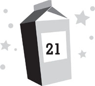

Lunar day 217
Late afternoon
Two minutes later, I was back on the surface of the moon.
Chang had gathered the emergency equipment and rushed me through suiting up. Now we were heading clockwise around the base as quickly as we could go.
I was terrified. I feared I was going to get plugged by a falling piece of space junk, or that the patch on my space suit might fail, or that a thousand other things might go wrong.
Chang wasn’t exactly being reassuring. He was so concerned about saving Nina, he wasn’t very focused on me. He kept charging ahead, almost seeming to forget about me, then getting annoyed that I was slowing him down.
“Come on,” he chided as we passed the rover garage. “Nina doesn’t have much time.”
“I’m doing my best,” I told him.
“Well, we need to move faster,” he said sternly. “Try to keep up.”
I picked up the pace, but it was a struggle. The exertion made me use a lot more oxygen than I wanted to, which made me worried—which made me breathe even heavier, which used even more oxygen, and so on. My heart was pounding in my chest like I was running a marathon.
We rounded the science pod to the north side of the base. I had never been there before, and since there were no windows facing this direction, I’d never been able to see it. Moon Base Alpha wasn’t very attractive, but this area made the rest of it look like the Garden of Eden. It was full of ugly gray machinery: the water reclamation unit, the power storage for the solar arrays, the devices that made oxygen and filtered our air, and a whole bunch of other unattractive, clanking things that did stuff I didn’t understand but that probably kept all of us alive. Plus, every piece of broken machinery and unused scrap of building material had been dumped there. With no atmosphere to erode it and no wind to blow it away, it all just sat there, and would still be sitting there in ten thousand years. It was as though humans had scoured the earth for the least attractive industrial park and then rebuilt it on the moon.
A thick ridge of dark, ancient volcanic stone poked through the moon dust ahead. It ran from the solar array to underneath the moon base.
“That looks like our lava tube,” Chang told me.
“It’s buried,” I said. “How do we get into it? How’d Nina get into it?”
“There, I’ll bet.” Chang pointed to a gap in all the machinery along the wall of the base, where a large sheet of steel lay on the ground. If we hadn’t been specifically hunting for it, we might have easily overlooked it; it blended in with all the other garbage. On earth, the steel might have weighed several hundred pounds. Here, Chang lifted one end with ease.
Below it was the entrance to the lava tube.
“Looks like we found the right place,” Chang said. He propped the steel sheet against the water reclamation unit.
I stared at the gap in the rock warily. It was much smaller than the entrance to the operations pod at MBB. Even though I was afraid to be out on the lunar surface, the tunnel didn’t look much more inviting. It was merely a narrow, dark, jagged hole, the kind of place you could imagine dangerous things lurking inside of. I knew there weren’t any such things as space snakes, but if there were, they would have lived in holes like this.
“Let’s go,” Chang ordered. “I’ll lead the way.”
We each had spotlights built into our helmets for getting around on the lunar surface during the long periods when the sun wasn’t out. Chang flipped his on and stared into the hole. The light made it less daunting, but it was still awfully spooky.
Chang descended into the tube. He was a big guy and his suit made him even bigger, so the narrow entrance was a tight fit. He had to duck his head to get under the moon base.
“All right,” he told me. “Come on down.”
I flipped on my own helmet lights and edged into the hole after him. Since I was much smaller, it was easier for me to get inside, although I still took care around the jagged rocks.
We had left the sheet of steel that had concealed the hole propped against the water reclamation unit above, although there hadn’t been much room between the unit and the lava tube to do this properly. I hadn’t gotten far into the tube before the steel succumbed to gravity and toppled. It crashed back to the surface right above my head, making the tube even darker.
I figured the same thing must have happened when Nina had come into the tube the night before. And with the steel over it, the entrance was hidden perfectly. It made sense that the search parties that had come through earlier hadn’t looked for Nina underneath a flat piece of steel on the ground. After all, Nina was a human being, not an ant. And no one had known there was a lava tube underneath the moon base.
Except Nina, apparently.
The tube descended steeply beneath the foundation of the moon base, which was three feet of solid concrete. Just below it, we came across the operations pod.
It looked almost exactly the same as the one at MBB. It was smaller and the air lock was an older model, but the basic design was the same. Chang already had the air-lock door open.
“Hurry,” he told me.
I stepped inside after him. He closed the door behind us, then pressed the button to activate the repressurization.
It didn’t work the way it was supposed to. The entire air lock shuddered like a balky washing machine, and then a red warning light flashed on the ceiling. I knew that at least some atmosphere had been created, because I could suddenly hear things outside my helmet, but something definitely seemed to be wrong. There was a loud, sputtering noise, like a generator struggling to provide energy.
“Warning,” a pleasant computerized voice said, although it was barely a whisper, as though it was running out of power. “Pressurization has been completed, but due to a malfunction in the oxygenation system, oxygen levels are critically low. Please exercise caution and do not mphrfllthhppp.” The warning decayed into gibberish as the central computer died. The red warning lights flickered around us.
That wasn’t exactly reassuring. I had to fight to keep from hyperventilating and gulping all my oxygen down at once.
“Dang it,” Chang muttered. “That’s not good.”
This wasn’t exactly reassuring either.
I checked the sensors built into the sleeve of my space suit. The carbon dioxide level around us was dangerously high, while the oxygen was barely registering.
“I guess we leave our suits on?” I asked.
“Only if you want to live,” Chang replied. He pressed the red button on the side of the inner air-lock door.
Nothing happened. The door stayed locked.
“We’ll have to do this manually,” Chang sighed. “The pod’s running out of power. It’s probably shunting everything it has to the critical life-support systems.” With that, he tore off the plastic covering around the air-lock door, revealing a manual release lever. “Grab on,” Chang told me.
Both of us grabbed the lever and yanked it upward. It should have been easy to open, but something was wrong with this, too. It took every ounce of strength Chang and I had to swing it upright.
The inner air-lock door popped open, allowing us into the pod.
Inside, the lights had gone off to conserve power. Our headlamps fired beams through the darkness, illuminating bits and pieces. I had once scuba dived into an underwater cave off the coast of Kona with my father. I hadn’t liked it very much. This looked eerily similar, but was about a thousand times scarier.
Now that we were inside, I could see this pod was significantly smaller than the one at the site for MBB. It was hard to imagine four adults being comfortable inside it for a day, let alone a few months. There was a tiny workspace, an even tinier kitchen, and four drop-down bunks at the back.
Even though it was small, I still didn’t see Nina right away. But there was plenty of evidence she was there. The pod was a mess. Nina’s space suit—or rather, Lily Sjoberg’s—was crumpled in a wad by the wall. The helmet lay on the floor beside it. A long crack zigzagged across the visor.
The kitchen had been ransacked. Luckily for Nina, a little food had been left behind there by the original crew. Foil wrappers from emergency rations were scattered everywhere.
My immediate impression was that Nina must be in a bad state. She was normally so clean and tidy; I’d seen her flick invisible motes of dust off her clothes. She would never have left her living space in such disarray unless something was wrong.
“There!” Chang exclaimed, pointing to the rear of the pod.
I glanced the way he was looking, expecting to see something human. Instead I saw what looked like a giant foil-wrapped burrito nestled on a bunk. It took me a moment to realize it was a silver emergency blanket with Nina cocooned inside. Then it occurred to me that the heating had probably shut down in the pod. It would have been freezing without our suits on. To conserve what little heat she had, Nina had completely swaddled herself. Even her head was tucked inside the blanket.
Chang moved to the bunk. I followed him, though in my haste, I tripped over the space helmet on the floor. It spun away from me and bumped into the wall. The glass visor promptly shattered.
Apparently, Nina had made it to safety with only seconds to spare.
“Stay where you are,” Chang ordered curtly. “Don’t touch anything.”
I froze halfway across the pod. For a moment, I was afraid there was some other danger we’d have to deal with, but then I realized why Chang wanted me to keep my distance. He was opening Nina’s blanket and was worried she was dead.
Chang unfolded the blanket and I caught a glimpse of Nina’s head. Her normally perfectly gelled hair was a rat’s nest, and her skin was an unhealthy grayish color. I couldn’t see her face, but given the startled gasp Chang made at the sight of her, she probably didn’t look good. Thank goodness he’d stopped me. If I’d been any closer, I might have puked in my space suit.
Chang leaned over Nina to examine her closely. I couldn’t tell what he was doing from where I stood, but I guessed he was checking for a pulse. A few tense seconds slipped by. Then Chang gave a sigh of relief. “She’s alive.”
I sighed as well. “So she’s okay?”
“She’s not great,” Chang said grimly. “I think we got here just in time. Bring me the oxygen tank.”
I did as he’d ordered. The oxygen tank had a hose that was officially designed to latch onto a valve on our space suits, but there was an adapter that allowed a small clear plastic mask to be attached to it. The mask was like the emergency kind you see on airplanes, with a thin elastic strap to keep it over your head. Chang had already attached the mask to the tank, but getting the mask onto Nina’s head while wearing space gloves turned out to be incredibly difficult. I ended up cradling her head while Chang fumbled with the strap.
Now I had a disturbingly close view of Nina’s unconscious face. All the blood seemed to have drained from her. She looked like she’d been carved out of wood, like a ventriloquist’s dummy. She didn’t even flutter an eyelid while we struggled to save her.
Finally, with a triumphant cry, Chang managed to get the mask onto Nina’s face and clamp the plastic part over her nose and mouth. Another few seconds ticked by.
And then, a small cloud of moisture formed inside the mask. Nina’s chest rose slightly. After that, she seemed to realize—at least subconsciously—that there was suddenly much more oxygen available for her. She began to breathe regularly.
Chang heaved a huge sigh of relief. “That was close. If we’d been a few minutes later, she might have gone into a coma.”
“You saved her life,” I said.
“No,” Chang told me. “I only brought the oxygen. You’re the one who figured out where she was. You saved her life. Nice work, kiddo.”
I smiled. Despite everything, I didn’t feel scared anymore. “Thanks.”
“Keep an eye on her. I’m gonna try to fix her helmet so we can get her out of here.” Chang headed back across the pod to where he’d left the helmet repair kit. He picked up Lily’s helmet and set about the difficult task of replacing the visor while wearing space gloves.
Something suddenly grabbed my hand.
I nearly leaped out of my space suit. I squawked in fear, spun around—and then realized it was Nina. Her eyes were already open, although she still seemed awfully drowsy, like she was still asleep.
“Dash?” she asked. Her voice was muffled by the oxygen mask.
“Yes.”
“I’m not dead?”
“No.”
“That’s good.” Nina smiled dreamily. “I really screwed up, didn’t I?”
Chang hurried back over. “Take it easy, Nina. You don’t need to talk right now. You’ve been through a big ordeal. . . .”
“I want to talk,” Nina replied. “I want to explain. . . .”
“You can do it later,” Chang said.
“No. I want to do it now.” Even though she was barely alive, Nina was still determined to do things her way. “You deserve to understand why I’m here. . . .”
“We know about the moon rocks you were collecting,” Chang said.
Nina’s eyelids lifted in surprise for a moment, then drooped again. “How?”
“Dash and Kira found them,” Chang replied.
Nina’s eyes flicked to me. “I should have guessed. I didn’t want to take them, but I was in desperate trouble and had no other choice.”
“What kind of trouble?” I asked.
Nina didn’t answer. Her eyes drooped back closed. It looked as though she’d lapsed back into unconsciousness again. I felt myself tense up with concern.
“Nina?” Chang asked, worried.
“Financial trouble,” Nina murmured, her eyes still closed.
I relaxed, thankful that she was still all right.
“My mother is very sick,” Nina went on. It sounded like it was a struggle for her to talk, like saying each word was a strain on her, and yet she forced herself to continue. “And her insurance was canceled. I thought it had been paid, but it hadn’t. . . . I needed money . . . but I didn’t have many ways to get it up here.”
“NASA couldn’t help you?” Chang asked.
Nina shook her head very slowly. Even that slight motion seemed to be a huge effort for her. “The solutions they offered were unacceptable. . . . But then, an opportunity presented itself.”
Sadly, Nina’s tale of financial trouble wasn’t very surprising to me. My family had experienced our own problems. It was tough to take care of things when you weren’t on earth. And when you were gone for three years, unexpected problems tended to pop up. We’d been renting our house to some people, but they’d trashed the kitchen and skipped out without paying after a few months. Arranging repairs from space and dealing with all the payments had been almost impossible. When we’d been recruited, NASA had insisted that they had people who would be able to help us Moonies in cases like this. Unfortunately, those people hadn’t been much help at all.
To make things worse, everyone back on earth generally assumed we were all getting rich being Moonies. After all, we were famous. But all the adults were NASA employees and had signed contracts saying they wouldn’t cash in on their fame while at MBA. That meant no charging people for interviews or selling memoirs for millions of dollars. It made sense, really. NASA wanted to recruit people to the moon who were interested in the science, not in making money. But that wasn’t common knowledge. Mom and Dad were pretty sure that every contractor they reached out to to fix our kitchen was jacking up the price because they thought we were loaded.
So it wasn’t like someone like Nina would have a ton of money in the bank, and her options to get more would have been limited. She couldn’t simply quit working at MBA and get a better-paying job. There weren’t any other jobs on the moon—and Nina wasn’t scheduled to return to earth for another two and a half years. I wouldn’t have expected her to turn to crime, but I could understand why she had done it. And as crimes went, stealing moon rocks was awfully harmless. No one would get hurt, and frankly, the moon could use a few less rocks.
“What kind of opportunity?” Chang asked. “You mean Charlie? The one who texted you the music?”
Nina looked a tiny bit surprised that we’d figured this out, but then nodded. “Yes.”
“The music was a code, right?” Chang pressed. “ ‘Fifty Miles of Elbow Room’ and a song by the Rolling Stones were an order to get fifty stones.”
“That’s right,” Nina replied, and then started singing in her dreamy state. “ ‘The gates are wide on the other side, where the flowers ever bloom. . . .’ ”
Chang interrupted her. “What’s Charlie’s real name?”
“I don’t know,” Nina said.
“Really?”
“Really. I know he works in cargo and that’s it.” Nina paused for a few seconds to breathe deeply. “The idea was for me to send the rocks back down on the next rocket.”
“And since he’s in cargo, he can unload them before anyone else notices them,” Chang concluded.
“Yes,” Nina said. “I got the first batch without any trouble, but then last night, he sent another message asking me to increase the shipment. . . . It should have been easy. But it wasn’t. . . .” In Nina’s delicate state, it seemed as though even merely speaking was taking a lot out of her.
Chang placed a hand on her shoulder, signaling he could do the talking. “Let me guess what happened. You shut down the security systems around the main air lock so you wouldn’t be recorded leaving. You left your watch behind so you couldn’t be tracked—and you took Lily Sjoberg’s suit because all the suits have transmitters and you didn’t want yours to record you’d left the base. Probably, no one would have ever checked, but if they did, you’d be in the clear.”
“I thought she dismantled the transmitter,” I said. “Or messed with it somehow to get it to say she was inside the base when she wasn’t.”
“No, the transmitter worked fine,” Chang told me. “It gave us Nina’s exact coordinates. We just didn’t understand it. We thought it was telling us that Nina was inside the base. It never occurred to anyone that Nina might be under the base.”
“Oh,” I said. If I hadn’t been wearing a space suit, I would have smacked my forehead.
Chang returned his attention to Nina. “Anyhow, you took Lily’s suit. And most likely, you would have been out and back without anyone ever noticing. Only something was wrong with Lily’s helmet. The visor was cracked.”
Nina’s eyes opened in surprise. “How did you know?”
“Cesar and Patton broke it,” I explained. “They were wearing them to play football at night and broke a bunch of the visors.”
Even in her exhausted state, Nina’s eyes flashed with anger. “Those morons. I almost died because of them.”
“A lot of us almost died because of them,” Chang said pointedly. “While looking for you.”
Nina bit her lip. It was as close as she’d ever come to appearing embarrassed. “I didn’t mean for any of this to happen. . . . If it hadn’t been for the helmet, everything would have been fine. But I didn’t notice the visor was damaged until I was over here.”
“You were heading to the rocks with armalcolite?” I asked.
Nina’s eyes flicked to me, surprised. Then she nodded. “Yes. And then the crack appeared and my suit computer said the situation was critical. I only had a minute or two. There wasn’t enough time to get back to the main air lock, but I knew the pod here was still operational. Or I hoped it was. It wasn’t until I got in here that I realized all the communications gear had been removed. The radio in Lily’s helmet couldn’t get any reception down here and I didn’t have my watch. So there was no way to contact you back in the base.”
“So you tried yelling through the floor,” I said.
“Yes. I yelled for hours, until I was hoarse. Violet was the only one who heard me. I asked her to get help, but she must not have passed my message along.”
“She did,” Chang said. “But we didn’t realize what she was talking about.”
Nina sighed tiredly. Admitting to all her mistakes appeared to have drained her. “I didn’t have the strength to keep shouting. The oxygen system in here wasn’t working properly. I had to conserve my breath. And my strength.”
“Good thing you did,” Chang told her. “The carbon dioxide level in here is toxic.”
Nina’s eyes began to flutter closed. “Now what do we do?”
“Wait for you to get your strength back,” Chang answered. “I’ll fix your helmet and then we’ll get you back to base.”
“I mean, what do we do about me?” Nina asked. “What I did is a criminal offense. I should be court-martialed.”
“That’s NASA’s call.” Chang shot me a conspiratorial glance. “And NASA won’t know what happened up here unless we tell them.”
“You have to tell them,” Nina said. “As acting commander, it’s your job.”
“I’m not acting commander anymore,” Chang replied. “You’re alive.”
“I don’t deserve my position. . . .”
“Everybody makes mistakes,” Chang said.
Nina sighed again, but seemed too tired to argue the point. Her eyelids slid closed and she drifted back to sleep again, snoring softly.
As she did, something occurred to me. Chang was right that everyone made mistakes, but Nina made them less than most people. In fact, besides getting stranded on the moon, I couldn’t think of any mistake Nina had ever made before. And frankly, Cesar, Patton, and Lily were the ones who’d really screwed up: They’d broken the helmet; Nina simply hadn’t noticed. Nina was cold and robotic and she could be a real jerk, but there was always a reason for everything she did. At heart, she was doing her best to run a moon base, which wasn’t easy. Given all the things that could go wrong and all the people she had to deal with, she did an amazing job most of the time. Most people probably would have screwed up one thing after another, but Nina hadn’t.
So if anyone had ever wanted to catch Nina doing something wrong, they would have had to wait a very long time.
Unless they tricked her into it.
Chang was watching Nina, making sure she was all right. Then he returned his attention to repairing Lily’s helmet.
“How long have you known you were the temporary second in command?” I asked.
“About four weeks, I guess. NASA made the decision shortly after Dr. Holtz died.”
“And you didn’t tell anyone at the base?”
“No. Like I said, Nina figured it was better to keep things quiet until NASA made it official.”
“So you’ve never talked about it since?”
“No.”
“Where were you when she told you the news?”
“The control room.” Chang looked at me curiously. “What’s all this have to do with anything?”
“Nothing,” I said, though it was a lie. In fact, what Chang had told me was extremely important.
I had a very good idea who Charlie was.